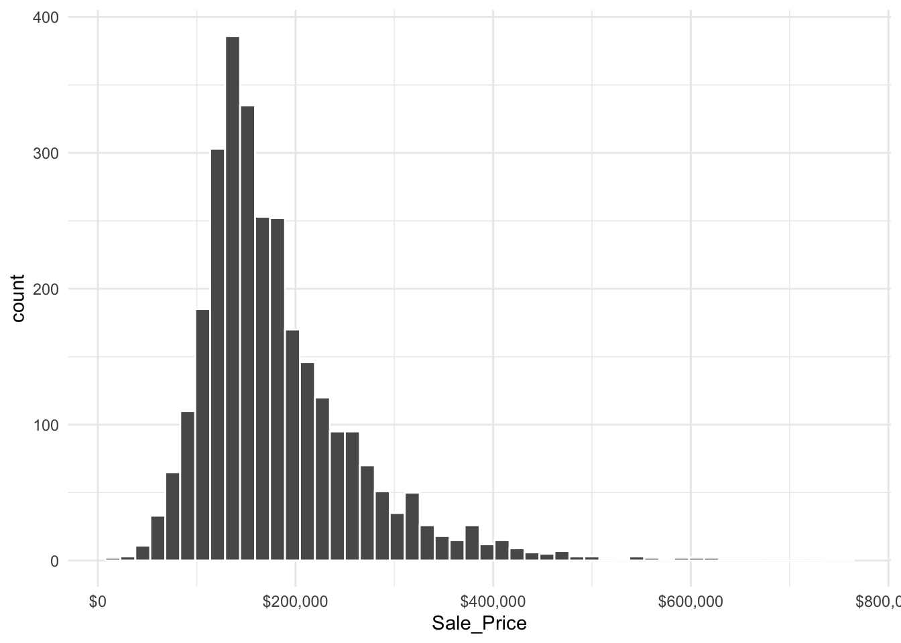
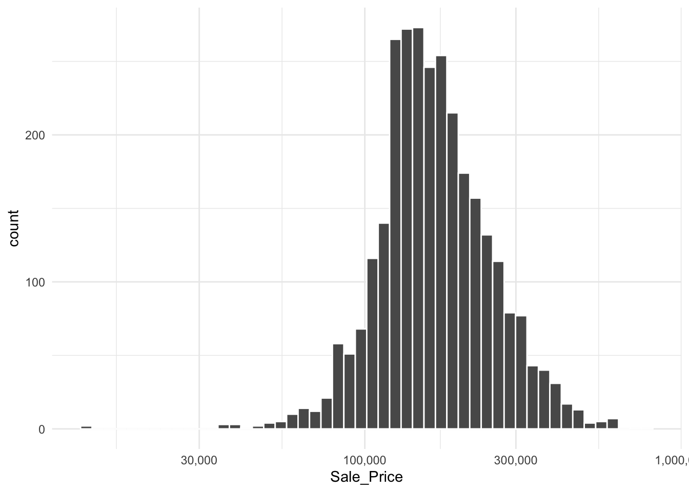

Code
require(modeldata)Loading required package: modeldataCode
data(ames)require(modeldata)Loading required package: modeldatadata(ames)dim(ames)[1] 2930 74require(tidymodels)Loading required package: tidymodels── Attaching packages ────────────────────────────────────── tidymodels 1.0.0 ──✔ broom 1.0.0 ✔ rsample 1.0.0
✔ dials 1.0.0 ✔ tibble 3.1.8
✔ dplyr 1.0.9 ✔ tidyr 1.2.0
✔ ggplot2 3.3.6 ✔ tune 1.0.0
✔ infer 1.0.2 ✔ workflows 1.0.0
✔ parsnip 1.0.0 ✔ workflowsets 1.0.0
✔ purrr 0.3.4 ✔ yardstick 1.0.0
✔ recipes 1.0.1 ── Conflicts ───────────────────────────────────────── tidymodels_conflicts() ──
✖ purrr::discard() masks scales::discard()
✖ dplyr::filter() masks stats::filter()
✖ dplyr::lag() masks stats::lag()
✖ recipes::step() masks stats::step()
• Use tidymodels_prefer() to resolve common conflicts.tidymodels::tidymodels_prefer()
theme_set(
theme_minimal()
)ggplot(
ames,
aes(
x = Sale_Price
)
) +
geom_histogram(
bins = 50,
col = "white"
) +
# scale_x_continuous(labels = scales::dollar, expand = c(0, 1.05))
scale_x_continuous(labels = scales::dollar)
ggplot(
ames,
aes(
x = Sale_Price
)
) +
geom_histogram(
bins = 50,
col = "white"
) +
scale_x_log10(
labels = scales::comma
)
Sale_Price in Datasetames <-
ames |>
mutate(Sale_Price = log10(Sale_Price))